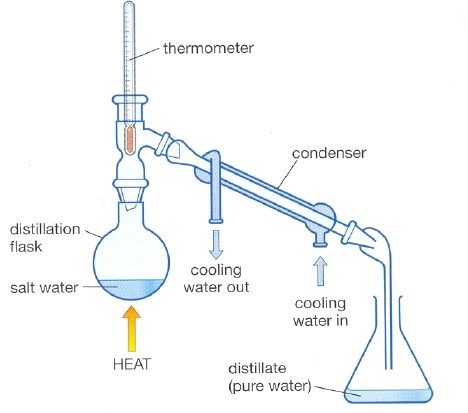
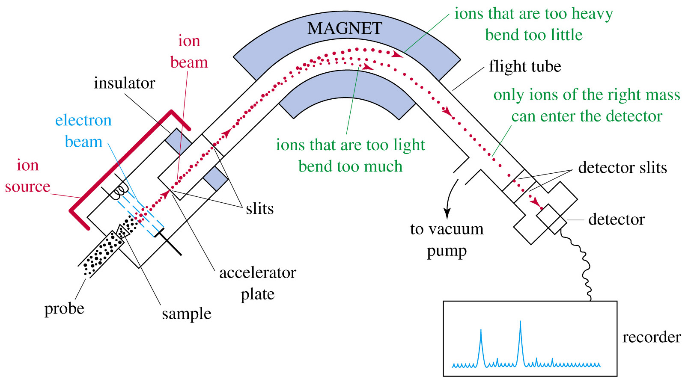
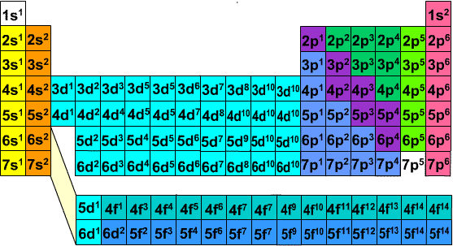

Chapter 1: Matter and Measurement
- States of Matter: Gas, Liquid, Solid
- Pure substance: Matter with distinct properties and composition that doesn't vary
- Element: Substance only composed of one atom
- Properites of Matter
- Intensive: Doesn't depend on volume of sample (ex. melting point)
- Extensive: Depends on amount of sample (ex. mass)
- Physical change: Change in physical appearance not chemical (ex. phase change)
- Chemical change: Change in chemical composition
- Seperation of Mixtures
- Filtration: Mixture of solid in liquid is poured through a filter
- Distillation: Depends on ability of substances to form gases
- Chromatography: Depends on ability of substances to adhere to solids
- Distillation Example 
Chapter 2: Atoms, Molecules, and Ions
- Mass Spectrometer
- Positive and negatively charged plates to sort out different molecules
- Stronger charges get pulled harder
- Heavier mass gets pulled less
- Mass spectrum: graph of the intensity of the detector signal 
- Electron Configuration 
- Naming Inorganic Compounds
- WIP
Chapter 3: Stoichiometry and Calculations
- Combustion: add O2 produces CO2 H2O
- Combustion Analysis: Sample combusts in chamber and separate chambers absorb H2O and CO2
- Formula Weight: Sum of the atomic weights of an atom in the chemical formula
- Molecular Weight: Formula weight of a molecule
- Avogadro’s number: Amount of atoms in exactly 12g of isotopically pure 12C
- Limiting Reactant: Reactant that is completely consumed in the reaction
- Excess Reactant: Reactant left over, limited by limiting reactant
- Percent Yield: Actual Yield / Theoretical Yield x 100
AP Chem
AP Chemistry study guide created by Jeffrey Chou.
Based off of Mr. Leung's curriculum and the Baron's AP Chemistry resource.